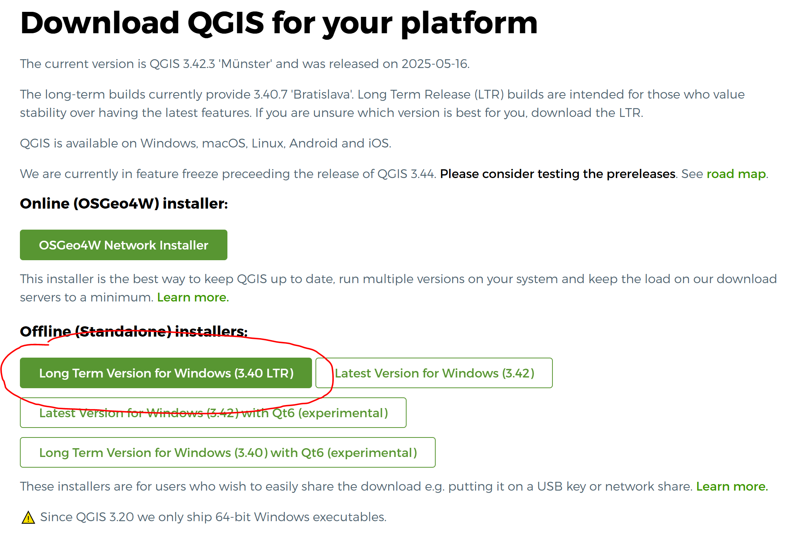

Install QGIS
Getting Started: Installing QGIS
To begin using QGIS, you’ll need to download and install it on your computer. The process depends on your operating system.
Installing QGIS on Windows
- Download QGIS
- Go to the official QGIS website: qgis.org
- Click on the
Download Nowbutton. - Choose Windows and download the Long Term Release (LTR) version. This version is more stable and recommended for beginners.
We recommend the Long Term Release (LTR) version for stability and compatibility.

- Run the Installer
- After the download is complete, double-click the installer file.
- Follow the installation wizard — you can safely accept the default settings.
- Select Components
- If asked, keep the default components selected. These will include QGIS and essential libraries.
- Install Plugins
- You might be asked to select optional plugins. Beginners can stick with the defaults.
- Finish the Installation
- Once the process is done, click Finish and launch QGIS from the Start Menu.
Installing QGIS on macOS
- Download QGIS
- Visit qgis.org
- Click the
Download Nowbutton and select the macOS version (Long Term Release recommended).
- Mount the Disk Image
- Open the downloaded
.dmgfile.
- Open the downloaded
- Move QGIS to Applications
- Drag the QGIS icon into your
Applicationsfolder.
- Drag the QGIS icon into your
- Install Dependencies (if needed)
- If prompted, follow the instructions to install any required frameworks or libraries.
- Complete Installation
- Eject the disk image, then open QGIS from the
Applicationsfolder.
- Eject the disk image, then open QGIS from the
Installing QGIS on Linux (Example: Ubuntu)
Add the QGIS Repository Open a terminal and enter the following:
sudo add-apt-repository ppa:ubuntugis/ppa sudo apt-get updateInstall QGIS
sudo apt-get install qgisInstall Extra Dependencies (if required) If prompted, install any suggested packages to ensure full functionality.
Launch QGIS You can now open QGIS from your applications menu.
Post-Installation: What’s Next?
- Check Your Version
- Open QGIS and go to
Help > Aboutto confirm that the correct version has been installed.
- Open QGIS and go to
- Start Exploring
- Try opening a sample project or load a basic shapefile (e.g., world countries or your city boundaries).
- Get familiar with tools like the Layer Panel, Map Canvas, and Attribute Table.
- Learn by Doing
- There are many beginner tutorials online to help you start working with QGIS (including official training at https://docs.qgis.org/).
You’re Ready to Go!
Congratulations — you’ve installed QGIS! As you continue your architecture studies, QGIS will help you understand spatial relationships, analyze urban systems, and communicate your ideas more effectively. Remember: it’s okay to start small — load a map, try out basic tools, and learn step by step.
💡 Tip: Bookmark https://docs.qgis.org for tutorials, documentation, and user guides.